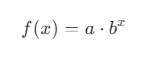
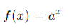
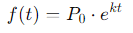
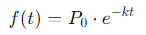
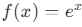
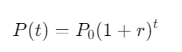

Eksponensial
Pengertian Eksponensial
Fungsi eksponensial adalah suatu konsep matematika yang menggambarkan pertumbuhan atau penurunan yang berlangsung secara berkelanjutan atau penurunan yang berlangsung secara berkelanjutan dengan laju tertentu. Pertumbuhan atau penurunan eksponensial terjadi ketika suatu nilai bertambah atau berkurang dengan faktor tetap (berdasarkan pangkat atau eksponen) pada setiap periode waktu.

- (a) adalah konstanta yang mengubah skala atau posisi fungsi.
- (b) adalah basis eksponensial, biasanya (b > 0) dan (b ≠ 1).
- (x) adalah variabel yang berada di dalam eksponen.
Macam-macam fungsi eksponensial :
-
Fungsi Eksponensial Dasar adalah salah satu konsep matematika yang melibatkan fungsi dengan variabel pada posisi eksponen.Dalam bentuk sederhana, eksponensial dasar dapat dituliskan sebagai:

Dimana :
- a adalah bilangan dasar (konstanta positif, a > 0, dan a ≠ 1).
- x adalah eksponen (variabel).
-
Fungsi Eksponensial Pertumbuhan adalah fungsi matematika yang menggambarkan pertumbuhan suatu kuantitas secara eksponensial, yaitu ketika laju pertumbuhan proporsional terhadap nilai kuantitas itu sendiri. Bentuk umum fungsi ini adalah:

Dimana :
- f(t) : nilai pada waktu t
- P0 : nilai awal (ketika t = 0)
- e : bilangan Euler (e≈2.718)
- k > 0 : laju pertumbuhan
- t : waktu
-
Fungsi Eksponensial Peluruhan adalah fungsi yang menggambarkan penurunan suatu kuantitas secara eksponensial seiring waktu, di mana laju peluruhan proporsional terhadap nilai kuantitas itu sendiri. Bentuk umumnya adalah:

Dimana :
- f(t) : nilai pada waktu t
- P0 : nilai awal (ketika t = 0)
- e : bilangan Euler (e≈2.718)
- k > 0 : laju peluruhan
- t : waktu
-
Fungsi Eksponensial Alami adalah adalah fungsi eksponensial dengan basis e, yaitu bilangan Euler (e≈2.718). Fungsi ini memiliki bentuk umum:

Dimana :
- e adalah basis eksponensial alami
- x adalah eksponen, bisa berupa bilangan riil positif, negatif, atau nol.
-
Fungsi Eksponensial Diskrit adalah fungsi yang menggambarkan pertumbuhan atau peluruhan eksponensial dalam suatu rentang waktu yang diskrit (berjarak atau tidak kontinu). Fungsi ini memiliki bentuk umum:

Dimana :
- P(t) : nilai pada waktu t
- P0 : nilai awal
- r : tingkat perubahan (pertumbuhan atau peluruhan per periode)
- jika r > 0 :fungsi menggambarkan pertumbuhan
- jika r < 0 :fungsi menggambarkan peluruhan
- t : jumlah periode waktu diskrit